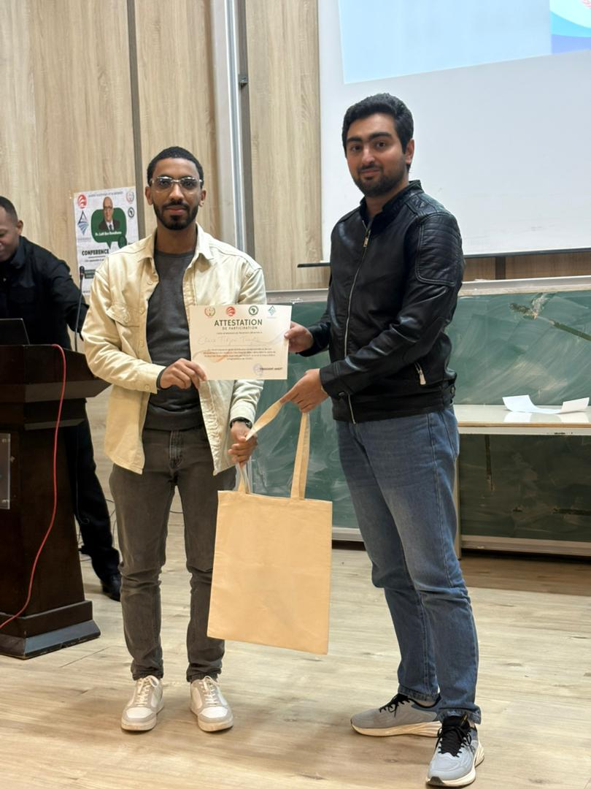

AI Research Engineer · Sousse, Tunisia
Building AI that
reads the room.
I design emotion-aware language models for safer, more empathetic human–AI interaction—with a focus on digital mental health.

01
First place · My Thesis in 180 Seconds
Large Language Models✦
Affective Computing✦
Reinforcement Learning✦
Responsible AI✦
Natural Language Processing✦
Large Language Models✦
Affective Computing✦
Reinforcement Learning✦
01 / Research
Making language models
more emotionally intelligent.
My work explores how models can recognize affective signals and adapt their responses—without losing technical rigor, safety, or trust.
AEAT = A + αh · Sh
Emotion-Aware LLMs through Reinforcement Learning
Developing a Transformer-based architecture that integrates real-time emotion analysis with RLHF and reward modeling—helping open-source models respond more appropriately to distress, anxiety, and other affective cues.
- Emotion-conditioned attention
- Human feedback & reward modeling
- Safety in sensitive domains
01.1 / Research supervision
Guided by established
AI researchers.
My doctoral research at MARS Research Lab is developed with academic guidance grounded in artificial intelligence, automated reasoning, and trustworthy information systems.
PhD supervisor · Professor of Computer Science
Prof. Lotfi Ben Romdhane
Professor at ISITCom, University of Sousse, specializing in artificial intelligence, automated reasoning, big data, and graph algorithms.
PhD co-supervisor · Assistant Professor
Dr. Imen Fadhli
Researcher in artificial intelligence, deep learning, sentiment analysis, and credibility assessment in online conversations.
MARS Research Lab
01↗
PyTorch · BART · NLP
EAT-BART
An encoder-side Emotion-Aware Transformer that injects NRC emotion-intensity features into BART self-attention for mental-health response generation.
02↗
LangGraph · ChromaDB · Streamlit
Multi-Source RAG
A retrieval system that dynamically routes questions between native LLM responses, a local vector store, and real-time web search.
03↗
Dataset · Gemini · Mental health
Positive Conversations
A public dataset of 150 uplifting, strength-based conversations for augmenting therapeutic dialogue and fine-tuning conversational AI.
03 / Presentations
Complex research.
Clear stories.
Presenting technical work across languages and audiences—from a full academic defense to a three-minute public challenge.
EN
Full presentation
Master's thesis · English
Large Language Models for Mental Healthcare
FR
180 sec
Winning presentation · French
My Thesis in 180 Seconds

04 / Recognition
First place in “My Thesis in 180 Seconds.”
Awarded first place at the Scientific and Academic Day for International Students in Tunisia—turning more than a year of AI research into a clear, engaging three-minute story for a multidisciplinary audience.
Tunisia · 2026
Presented in French
05 / Journey
A path from building
software to advancing AI.
2026 — Present
Research experience
PhD Researcher · MARS Research Lab
Researching emotion-aware language models based on reinforcement learning while pursuing a Doctorate in Computer Science at ISITCom.
2025
Research internship
LLMs for Mental Healthcare · MARS Research Lab
Designed an attention-based emotional fusion mechanism for more empathetic dialogue generation.
2023
Engineering experience
Mobile Development Intern · Yooreed
Built a mobile workflow for courts to notify lawyers about case status, hearings, and deadlines.
2022
Engineering experience
Back-end Development Intern · BCI Bank
Created an API that let clients report ATM issues directly to the bank's service team.
Open to research collaborations
Have an ambitious
AI problem?
Let's discuss research, responsible AI, or building language systems with real human impact.
tweylib.cheikhtidjani@gmail.com